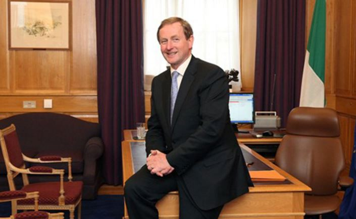

“Do Not Weep When I Leave, I Am Always In Your Hearts” Taoiseach Tells Public
STAFF WRITER: JOE BLOGGS, March 5, 2017
SENSING the widespread grief the Irish public will be faced with when he vacates the position of Taoiseach in the coming weeks, the Fine Gael leader has given a moving address reassuring the public that life will go on though hard it may be to believe that right now.
“You will feel lost.
You will strike out in anger, trying to comprehend what you could have done differently, but do not blame yourself dear, dear voter,” Kenny’s video address to be televised later this evening across RTÉ 1, RTÉ 2, TV3, the Playboy Channel and TG4 began.
“These things just happen, and you may ask yourself ‘how will I cope? How will I be able to move on?’
As crazy as it seems now, you will move on,” Kenny added, adopting a fatherly tone.
“Do not weep when I leave, I am always in your hearts and yes, I love you all too”.
Barely keeping it together at times, the Taoiseach shared a knowing smile in an effort to reassure the distraught public everything would be okay.
“I carry on in all of you, I am the wind beneath your wings and I am other, less successful Bette Midler songs too I’d imagine. I am not all that familiar with her songbook. However, what is important is that you mourn me not, okay maybe dress in black for like two weeks at most, but cling to those memories of my time as Taoiseach that we all treasure and marvel at. Like that time Barack Obama gave me one of those cool handshakes black fellas do. Or when I gave out to Gerry Adams for being in the IRA”.
“No matter who succeeds me, don’t worry; big corporations will be protected, stealth taxes will continue, we will keep our heads in the sand when it comes to the issues most important to you”.
Bringing his address, which will surely leave no eye untouched by tears, to an end the Taoiseach concluded: “you see your love for me can live on in those memories we all share. Put away your tissues and tears, put away your issues and your fears. Poppa Enda isn’t gone, he’s just sitting over here, watching over you, always”.